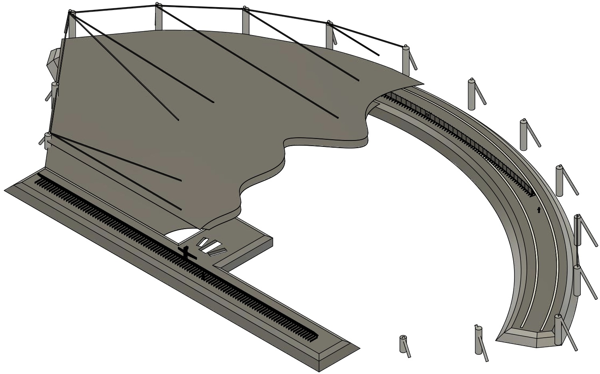

Wide Aperture Exoplanet Telescope Astro2020 whitepaper
The National Academies coordinate the Astro2020 decadal survey process. You can download a PDF of our Astro2020 whitepaper on the WAET project:- WAET: low-cost ground based telescopes for accelerated exoplanet direct imaging The Wide Aperture Exoplanet Telescope (WAET) is a new ground-based optical telescope layout with an extremely asymmetric aperture, which results in new exoplanet imaging reach at very low cost. We suggest that hWAET, a 100x2m telescope, can be built for $150M in the 2020s, and >300m versions merit further R\&D. (Authors: BM, Dominic Oddo, Christian Rodriguez)
Simulated exoplanet populations and their observability by 8m and 30m telescopes, using the contrast specs of the TMT PSI and a 5 lambda/D cutoff, and extrapolations to 100m and 300m. For full details, see whitepaper.

Isometric drawing of a 100m x 2m WAET telescope, showing the siderostat (lower left), the primary (upper right), and a wind baffle stretched above and below the beam path.